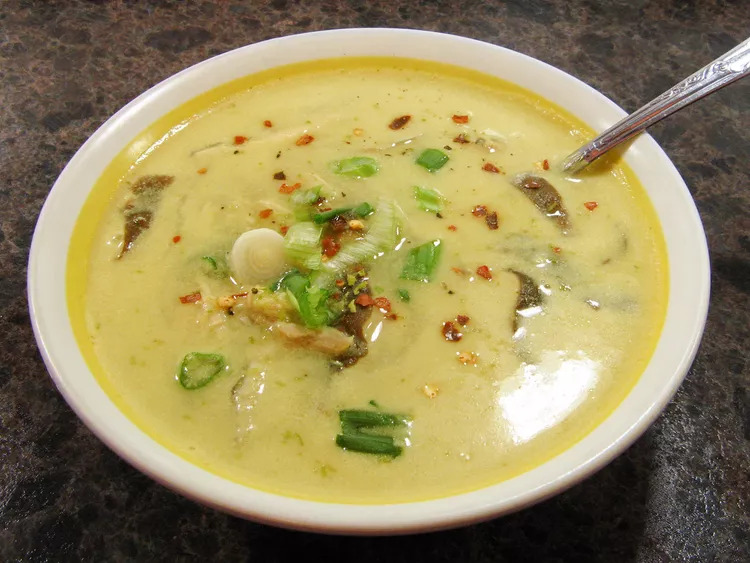

Authentic Thai Coconut Soup

Description
This authentic Thai coconut soup is for food lovers. If you have all the
ingredients on hand it's easy to put together and makes the perfect comfort
food. If not, it only takes one trip to the market. It's so versatile you can
make it vegetarian or substitute chicken for shrimp. Enjoy!
Ingredients
- 1 pound medium shrimp - peeled and deveined
- 2 (13.5 ounce) cans canned coconut milk
- 2 cups of water
- 1 (1 inch) piece galangal, thinly sliced
- 4 stalks lemon grass, bruised and chopped
- 10 makrut lime leaves, torn in half
- 1 pound shiitake mushrooms, sliced
- ¼ cup lime juice
- 3 tablespoons fish sauce
- ¼ cup brown sugar
- 1 teaspoon curry powder
- 1 tablespoon green onion, thinly sliced
- 1 teaspoon dried red pepper flakes
Steps
-
Bring a pot of water to a boil. Boil shrimp until cooked, about 1 minute.
Drain shrimp and set aside.
-
Pour coconut milk and 2 cups water into a large saucepan; bring to a simmer.
Add galangal, lemongrass, and lime leaves; simmer until flavors are infused
about 10 minutes.
-
Strain coconut milk into a separate pan and discard spices. Simmer shiitake
mushrooms in coconut milk for 5 minutes. Stir in lime juice, fish sauce, and
brown sugar. Season to taste with curry powder.
-
To serve, reheat shrimp in soup and ladle into serving bowls. Garnish with
green onion and red pepper flakes.